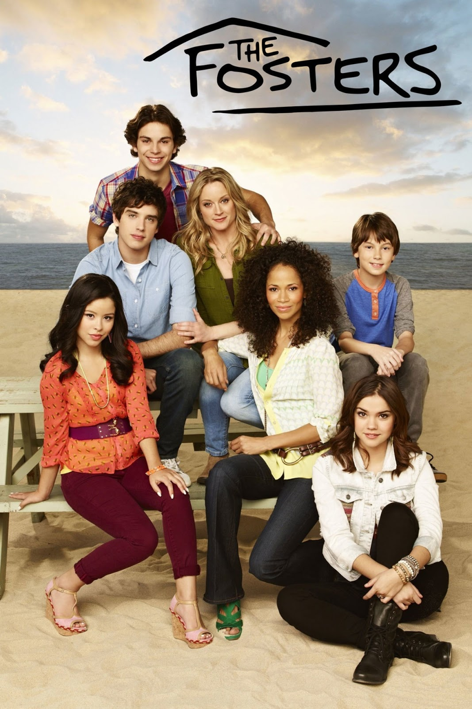

My Favorite Tv Shows
Pretty Little Liars

Pretty Little Liars is my favorite show. It's about four girls who gte their lives turned around by an evil figure. I love this show because of all the suspense and all the drama that comes with it.
Grey's Anatomy

Grey's Anatomy is another one of my favorite shows. It's about nurses and interns trying to become the best doctors they possibly could. They have to deal with massive accidents and what life has to throw at them. This show has a lot of drama and funny charcters. Some of the characters are Meredith Grey, Derek Shephard, Mark Sloan, Alex Karev, Miranda Bailey, Cristina Yang and many more. Meredith Grey has to face some hardships like her husband, Derek Shepards death. She is not okay and she needs her friend Cristina but she is on the other side of the world.
The Fosters
The Fosters is about 2 women who want to have a family. They decided to adopt 5 kids. Their names are Callie, Mariana, Jude, Jesus and Brandon. Mariana and Jesus are twins and Callie and Jude are brothers and sisters. Callie is secretly in love with Brandon and he is secretly in love with Callie but they can't have a relationship.
Modern Family

The Fault In Our Stars is a very moving story about a teenager named Hazel Grace Lancaster who was diagnosed with cancer and fell in love with Gus Waters who also had cancer. This movie makes you feel what love really is. I almost cried during this movie. It is a really good movie to see if you haven't.